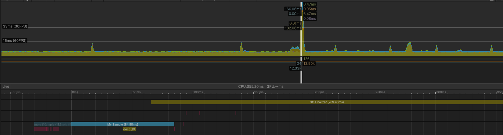

Dal momento che ieri ho trovato il problema di caricare le texture dello spartito senza bloccare il thread principale, ho cominciato ad elaborare una soluzione che funziona in questo modo:
Questo piano sembrerebbe funzionare bene se non per un problema nello step 3: chi ha implementato la libreria evidentemente non ha ottimizzato troppo a fondo il caricamento, e insorge il problema dove questo step utilizza molta memoria in modo non ottimizzato e il garbage collector impazzisce. Questo effetto non e' pronunciato nelle build release, ma mi dispiace non poter correggere questo problema (senza perdere MOLTO tempo che non penso sia opportuno).
Per individuare questa sezione come la fonte del lag, ho utilizzato il profiler di Unity per analizzare la fonte del problema:
Provero' a indagare sulla possibilita' di disattivare/attivare manualmente il garbage collector, magari in questo modo riesco ad evitare il problema, anche se non e' molto grave nelle build.